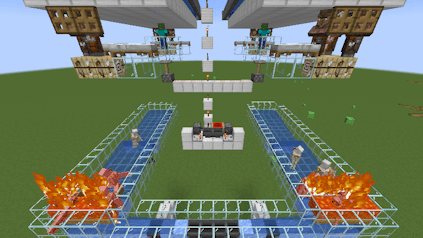
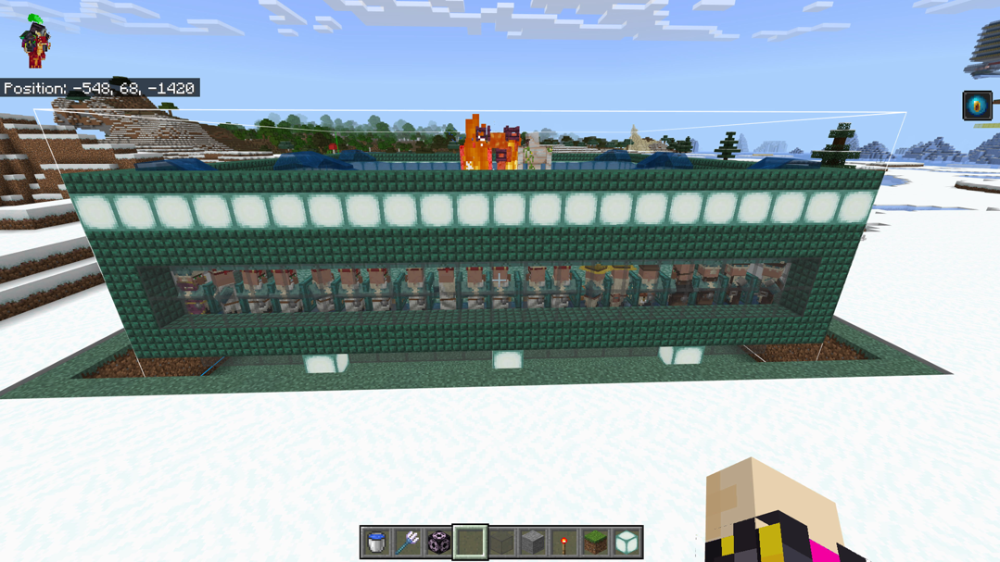

Top 10 Iron Farms in Minecraft
(Acording to ChatGPT)
Top 10
Dusty Dude’s 1.21 Iron Farm with Raid Farm Synergy
Type: Endgame integrated automation Output: ~800–1000/hour (when combined) Version: 1.21 Features: Uses a shared villager base for both raid and iron golem spawning. Pros: Perfect for technical players; insane efficiency. Cons: Complex to synchronize.
Top 9
SilentWhisperer’s Bedrock-Compatible Iron Farm
Type: Cross-version (Bedrock and Java variant) Output: ~300–400/hour on Java Version: 1.19–1.20 Features: Focuses on consistency and mob-proofing. Pros: Easy to adapt between game editions. Cons: Slightly slower on Java.
Top 8
TangoTek “Iron Phoenix” (Legacy but Legendary)
Type: Multi-village mega farm (pre-1.14) Output: 7,000+ iron/hour Version: Works only in 1.12.2–1.13 Features: Pre-villager-update exploit; still honored as a technical masterpiece. Pros: Historically the most efficient ever built. Cons: No longer functions on modern versions.
Top 7
Avomance’s Micro Iron Farm

Type: Compact and hidden design Output: ~150–200/hour Version: 1.19–1.20 Features: Fits seamlessly into a base design. Pros: Great for aesthetics-focused builders. Cons: Small scale only.
Top 6
Gnembon’s Iron Farm (Efficient Villager Logic)
Type: Technical, fully optimized Output: ~450–600 iron/hour per module Version: 1.16–1.20 Features: Exploits villager linking mechanics for maximum reliability. Pros: For advanced players/servers. Cons: Requires precise setup.
Top 5
Wattle’s Simple Iron Farm
Type: Early-game, passive iron production Output: ~200 iron/hour Version: 1.17–1.20 Features: Villager panic cycle works off natural day-night rhythm. Pros: Fits perfectly near your base; low redstone. Cons: Slightly slower spawn timing.
Top 4
YouHaveTrouble’s 1.20 Compact Iron Farm

Type: Ultra compact Output: ~350 iron/hour Version: 1.20+ Features: Designed for survival worlds with minimal footprint. Pros: Space-efficient, easy to expand with multiple modules. Cons: Lower yield than large-scale builds.
Top 3
JC Playz “Simple Survival” Iron Farm
Type: Starter-friendly vertical design Output: ~120–180 iron/hour Version: 1.18–1.21 Features: Uses just a few villagers and a zombie, perfect for early game builds. Pros: Very easy to build, no complex redstone. Cons: Not super fast, but great for beginners.
Top 2
Shulkercraft’s Massive Iron Farm
Type: Industrial-scale multi-cell farm Output: ~4,000+ iron/hour Version: 1.19–1.20 Features: Uses multiple stacked villages, ideal for large servers or megabases. Pros: Highly efficient and stable for long AFK sessions. Cons: Resource-heavy and demanding setup.
Top 1
LogicalGeekBoy’s 1.20 Iron Farm

Type: Compact multi-village farm Output: ~400–500 iron ingots/hour Version: 1.20+ Features: Uses separate pod chambers for villagers and zombies to create continuous panic cycles. Pros: Reliable, detailed tutorial, works perfectly in survival. Cons: Moderate redstone and villager setup. YouTube: LogicalGeekBoy’s channel — search “Minecraft 1.20 Iron Farm”